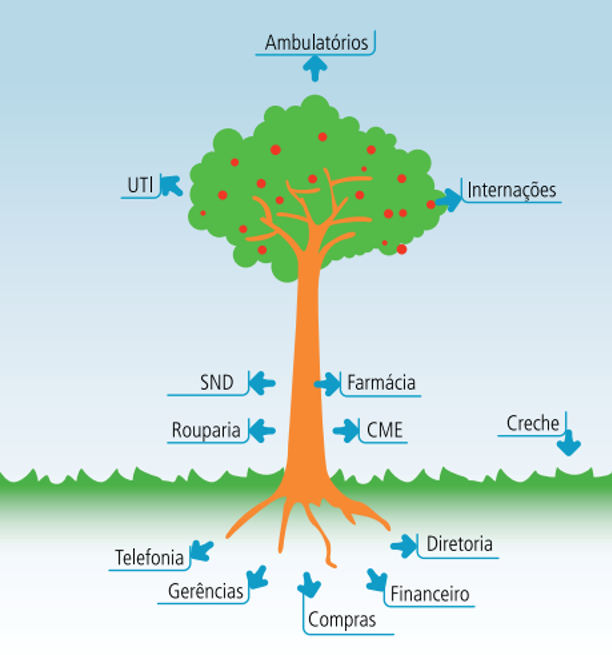

Podemos visualizar melhor o que foi dito fazendo uma analogia entres a estrutura de centros de custos de uma UA com a estrutura de uma árvore frutífera. A árvore é uma forma simples de representar a estrutura de custos.
O objetivo da árvore é dar: frutos (produtos) em seus galhos e prover sombra (serviços). Numa árvore, as raízes são responsáveis pela obtenção dos nutrientes e sustentação da estrutura. As raízes não interferem diretamente na produção dos frutos mas são essenciais para a consolidação do tronco e fixação da árvore. Os CC administrativos são as raízes da árvore. Não são percebidos, à primeira vista, mas precisamos deles.
O tronco é essencial para a sustentação dos galhos e, em conjunto com as raízes, conduzem a seiva até eles. Por fim, os galhos são responsáveis pela frutificação e sombreamento. Os centros de custos Auxiliares formam o tronco que sustenta e alimenta a produção dos frutos. Os trabalhos desenvolvidos por eles aparecem como auxiliares para a produção dos frutos, portanto os custos destes CC são rateados para outros CC auxiliares e para os CC produtivos. Frutos e sombra são de responsabilidade dos CC Produtivos, na forma de geração de produtos e prestação de serviços que constituem os objetivos finais da árvore. Eles só terão condições de produzir se receberem o apoio dos demais CC. Desta forma, arcam com os custos dos CC administrativos e auxiliares.
Eles recebem os custos de toda a Unidade Assistencial. Os CC Não Operacionais, por não estarem diretamente ligados ao objetivo final da Unidade, podem ser representados como um gramado em volta da árvore. Protege as raízes mas não faz parte diretamente da mesma. Um bom exemplo de CC não operacional seria a Creche.